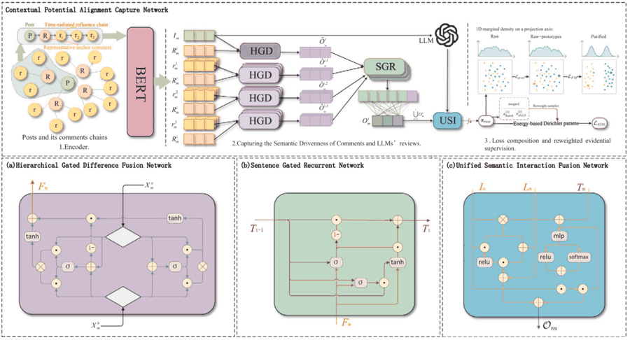
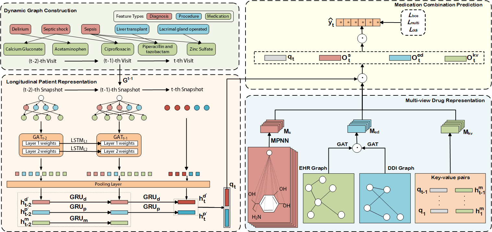
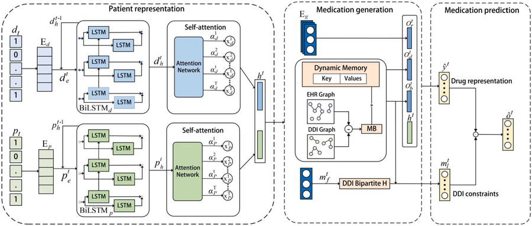
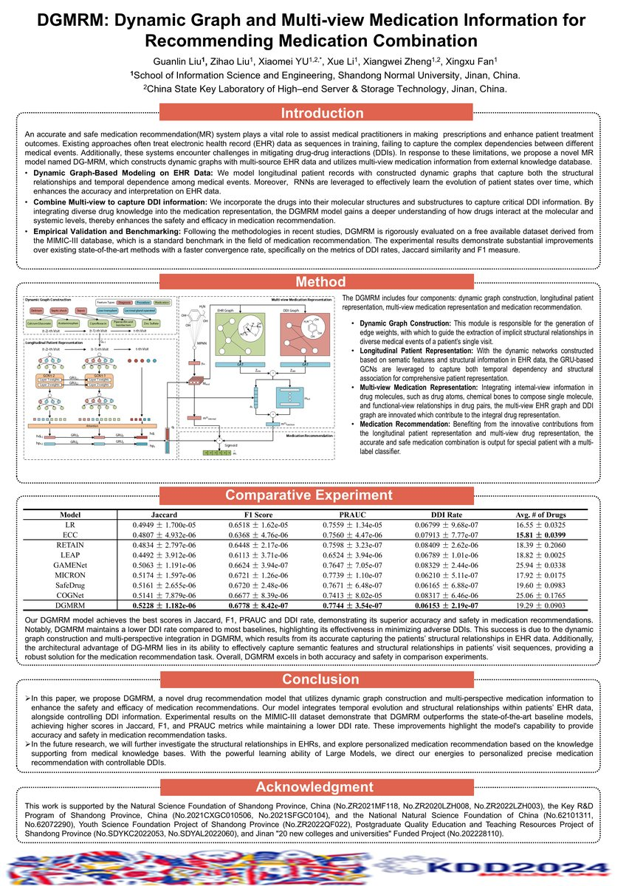
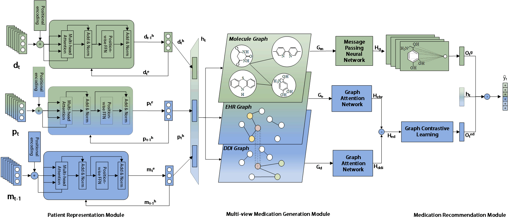

Publications
Peer-Reviewed Publications

CLEAR: Prototype-conditioned flow purification for LLM-based rumor detection with Dirichlet evidential learning co-author
Information Processing & Management IF 8.1, 2026. [DOI]

DNMDR: Dynamic Networks and Multi-view Drug Representations for Safe Medication Recommendation first author
Knowledge-Based Systems IF 8.0, 2025. [DOI]

Transformer-based medication recommendation with a multiple graph augmentation strategy co-author
Expert Systems with Applications IF 8.2, 2024. [DOI]

DG-MRM: Dynamic Graph and Multi-view Medication Information for Recommending Medication Combination first author
KDD-AIDSH, 2024. (Rank 1) [OpenReview]
Under Review

ENCMed: A 3D-Encoder Framework with Neighbor Contrastive Learning for Safe Medication Recommendation first author
Manuscript under review, 2026.